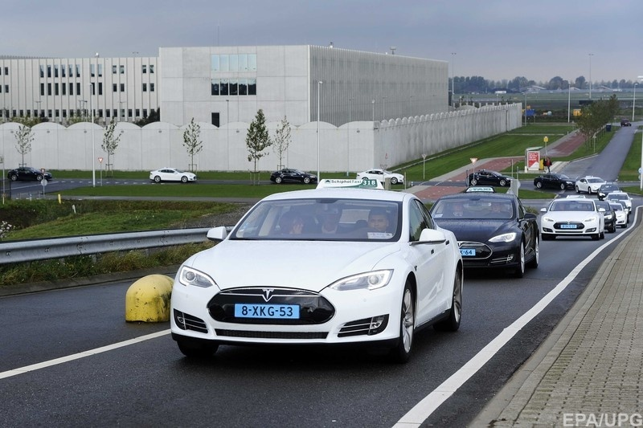
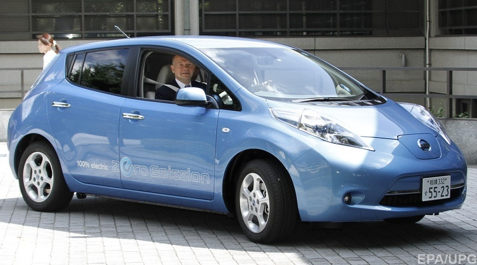
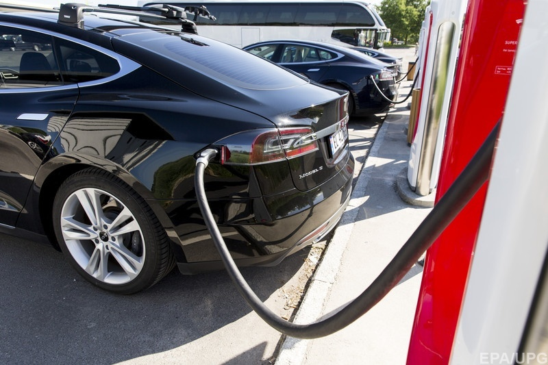

Электромобили - вред и польза ....
Ученые выяснили, что электромобили наносят больший вред для окружающей среды, чем традиционные авто на сжигаемом топливе
Как такое может быть, спросит рядовой обыватель, очарованный Илоном Маском и Tesla. Ведь едва ли не главный козырь электромобилей - как раз их пресловутая экологичность.
Однако, ученые готовы предоставить серьезные аргументы.
Выхлопные газы - не единственный вредный фактор автомобильного транспорта. Есть и другие. И как раз с ними связан самый большой ущерб для окружающей среды, которым чревато использование электрокаров.
Шотландские исследователи из Эдинбургского университета установили, что перемещение электрокаров приводит к выбросу в окружающую среду большого количества опасных частиц. Большего количества, чем в случае с обычными авто, подчеркивают исследователи.
Настоящий выхлоп
Десятилетиями обывателям рассказывали ужасы про вредные выхлопы двигателей внутреннего сгорания. Борьба за экономию топлива и все более жесткие экологические стандарты привели к вытеснению старых добрых двигателей-миллионников новыми одноразовыми моторами, которые не подлежат капитальному ремонту.
А затем появились электромобили, которые ничего не сжигают. Казалось бы, вот он прямой путь к решению проблемы транспорта и экологии.
Но не все так просто.

Электромобили действительно ничего не сжигают. И в этом отношении в чистую выигрывают у традиционных авто. Ноль выбросов парниковых газов это лучше, чем даже самые маленькие показатели у самых экологичных современных авто.
Однако электромобили резко проигрывают в другом. Они производят больше вредных выбросов иного рода.
Шотландские исследователи Виктор Тиммерс и А. Дж. Ахтен выяснили, что электромобили производят даже больше выбросов твердых частиц, чем традиционные авто.
Мельчайшие твердые частицы выбрасываются при разгоне и торможении машины. Источниками выброса являются тормозная система, покрышки (которые понемногу стираются при движении), а также покрытие дорожного полотна, на которое действует масса автомобиля.
В 2013 году британский исследователь из университета Хертфордшира Ранжит Сохи провел интересный эксперимент. Он установил детекторы твердых частиц в автомобильном тоннеле, через который за сутки проезжает в среднем около 50 тыс. машин.
Датчики показали, что один проезжавший через тоннель автомобиль производил примерно 30-50 микрограмм твердых частиц. И лишь около трети от этого объема было произведено двигателями.
Большую часть вредных веществ, попадавших в воздух, составляли частички битума дорожного покрытия, резины колесных шин и пыли от тормозной системы.
Подводя итог своего исследования, Сохи подчеркивал, что выхлопные газы - отнюдь не самая большая опасность, которую автомобили несут для окружающей среды.
“Твердые частицы представляют собой намного более вредный вид выбросов, - отмечает Ахтен. - Они самые токсичные и способны приводить к росту количества сердечных приступов, развитию астмы и многим других заболеваниям”.

Важно также и то, что выхлопные газы становятся по-настоящему вредными лишь в относительно долгосрочной перспективе - по мере накопления в атмосфере и роста общего загрязнения. А выбросы твердых частиц могут иметь буквально моментальное негативное воздействие на здоровье.
Количество выбросов твердых частиц напрямую зависит от массы авто. Чем тяжелее машина, тем больше энергии требуется на то, чтобы ее разогнать и тем большее усилие требуется, чтобы ее остановить.
А электромобили ощутимо тяжелее традиционных авто. В среднем, на 24%, отмечают эксперты.
К примеру, культовая Tesla Model S имеет снаряженную массу 2100 кг, а сопоставимая с ней BMW 7-Series - 1700 кг. Другой популярный электрокар Nissan Leaf весит 1500 кг, в то время как примерно соответствующий ему по габаритами Volkswagen Golf с бензиновым двигателем 1,2 л- 1200 кг.
Тут самое время вспомнить о почти анекдотических жалобах владельцев электрокаров на то, что им приходится менять резину чаще, чем на традиционных авто.
Все дело в весе аккумуляторов, которыми производители стремятся буквально напичкать электромобили, чтобы повысить дальность поездки на одной зарядке.
Аккумуляторы весят очень много, поэтому даже самые компактные из современных электрокаров представляют собой довольно тяжелые агрегаты.
Ахтен и Тиммерс установили, что у электрокаров в среднем на 1,5% выше выброс твердых частиц от износа шин, на 2% - от износа тормозной системы, и на 10% - от контактов с дорожным покрытием.
Такие показатели выбросов твердых частиц “перекрывают” эффект экологичности от отсутствия выхлопных газов, констатируют исследователи.
Борьба за экологию
И все эти подсчеты не учитывают такой фактор, как вредные выбросы, которые осуществляются в результате производства электричества.
А здесь тоже кроется подвох.
Согласно результатам исследования американских ученых из университета Северной Каролины, в штатах, где выше доля используемого электрического транспорта, выше общий уровень вредных выбросов.
Парадокс? Ведь электрокары не дают вредных выбросов, а следовательно, экологическая ситуация должна быть лучше.
Однако, на практике повышение потребление электричества (для зарядки электрокаров) ведет к повышению уровня его выработки. А это чаще всего ведет к большей загрузке теплоэлектростанций и других предприятий, которые вырабатывают электричество.

На этом фоне ясно, почему Илон Маск так активно продвигает идею солнечной энергетики и старается использовать преимущественно солнечные панели в качестве источника энергии для зарядных станций Tesla.
Исследование шотландцев - далеко не первое в этой области.
В 2013 году в США был опубликован бестселлер Оззи Зенера Зеленые иллюзии. Автор утверждал, что в большинстве случаев “зеленый” цвет технологиям придает маркетинг. Нет никакого энергетического кризиса, подчеркивал Зенер, есть только потребительский кризис, для борьбы с которым маркетологи и выдумывают мифы о безвредных для окружающей среды технологиях.
Даже весьма скептично настроенные эксперты не считают, что новые данные означают крах идей МаскаЗенер, в частности, ссылался на некоторые исследования, которые показывали, что хваленые электрокары отнюдь не безопасны для экологии.
Исследование Ахтена и Тиммерса является на сегодняшний день самым красноречивым подтверждением этой теории.
Кто-то мог бы предположить, что в странах ОПЭК, вероятно, уже потирают руки от предвкушения скорого заката электромобилей.
Однако, даже весьма скептично настроенные эксперты не считают, что новые данные означают крах идей Маска и его последователей.
Да, выбросы твердых частиц - это не шутка, и их вред для здоровья огромен, констатирует автомобильный блоггер Джейсон Торчински. Однако, решать эту проблему нужно на глобальном уровне, в частности, разрабатывая новые материалы для тормозных систем, автомобильных шин и дорожного покрытия.
Как бы там ни было, главным последствием шотландского исследования должно стать некоторое убавление самоуверенности и самовлюбленности владельцев электромобилей, иронизирует Торчински. По крайней мере, до того момента пока производители не научатся делать более легкие аккумуляторы.
По материалам сайта : https://nv.ua/